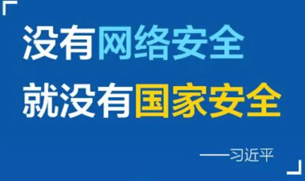

企业信息安全意识培训
一、信息安全基础概念
信息安全，意为保护信息及信息系统免受未经授权的进入、使用、披露、破坏、修改、检视、记录及销毁。黑客通过基于网络的入侵来达到窃取敏感信息的目的，也有被人收买通过网络来攻击商业竞争对手企业，造成网络企业无法正常营运，网络安全就是为了防范这种信息盗窃和商业竞争攻击所采取的措施。
1.信息安全三要素
ISO在《ISO/IEC 27000: 2014》中定义了信息安全，包括三个主要方面:保密性 (Confidentiality)、可用性(Availability)和完整性 (Integrity)。
保密性(Confidentiality)：确保信息在存储、使用、传输过程中不 会泄漏给非授权用户或实体。
完整性(Integrity)：确保信息在存储、使用、传输过程中不会被非授 权篡改，防止授权用户或实体不恰当地修改信息，保持信息内部和外部的一 致性。
可用性(Availability)：确保授权用户或实体对信息及资源的正常使 用不会被异常拒绝，允许其可靠而及时地访问信息及资源。
2.为什么需要信息安全
国家安全的需求
1) 政治、军事、经济、教育对信息的依赖
2) 符合法律、法规的要求
组织持续发展的需要
1) 信息是组织的重要资产
2) 提高服务水平的重要措施
3) 保护核心资产、知识产权、获得竞争优势
4) 向客户证明对信息安全的承诺
5) 内部管理的工具
保护个人隐私与财产的需要

我国对信息安全重要性的表述：“没有网络安全就没有国家安全”，可以认为这个网络安全等同于信息安全。
网络安全为人民，网络安全靠人民，维护网络安全是全社会共同责任，需要政府、企业、社会组织、广大网民共同参与，共筑网络安全防线。
——2016年4月19日，习近平在网络安全和信息化工作座谈会上发表讲话
3.信息安全的目标
漏洞是系统上的一个缺陷，当系统的完整性、保密性和可用性因这个缺陷受到影响时，我们就认为这是一个漏洞。
漏洞的存在对系统来说就是一个风险，当有人利用了这个漏洞并造成了实际的影响，那这就是一个安全事件。
发生的安全事件，对个人、企业或者国家的方方面面都可能产生巨大的损失。那信息安全的目标是：减少信息安全事件导致的损失
二、信息安全风险与事件
1.信息安全主要风险
信息风险与安全问题，主要来自系统漏洞、黑客频繁侵袭、病毒木马攻击、用户安全防范意识薄弱、用户信息被泄露、虚假不良信息的传播、移动信息安全威胁等方面。
一是黑客攻击由原来的单一无目的攻击转变成为有组织目的性很强的团体攻击犯罪，在攻击中主要以经济利益为目的，采取针对性的集团化攻击方式；
二是目前最有效的网络互联网攻击形式是DDOS攻击，常见的有SYN攻击、DNS放大攻击、DNS泛洪攻击和应用层DDOS攻击；
三是业务支撑系统存在安全漏洞，给病毒、DDOS、僵尸网络、蠕虫、间谍软件等侵入留下可乘之机，对其信息安全造成很大威胁；
四是病毒木马的威胁，很多木马程序和密码嗅探程序等多种病毒不断更新换代对网上银行实施攻击，窃取用户信息，可以直接威胁网上银行安全，其用户上网终端如没有安装木马查杀工具，就很容易被染；
五是信息泄露，业务信息是通过网络传输的，有些业务平台在信息传输、使用、存储、销毁等环节未建立保护信息的有效机制，致使信息很容易出现泄露风险；
六是网络钓鱼，和其他信息安全攻击方式不同，网络钓鱼主要诱骗互联网用户误认为钓鱼网站属于安全网站，很容易将用户信息泄露，虽然政府、企业对此非常重视，但很多钓鱼网站建在境外，很难监管；
七是移动信息安全风险，目前移动终端安全产品APP应用程序非常便捷，但由于用户安全防范意识比较薄弱及很多软件的信息安全存在安全隐患，可能会给用户造成损失；
八是企业的外包服务有可能给服务机构带来数据泄密的风险；
九是内控风险，因业务服务中信息系统与内部控制存在缺陷，也有不适当的操作和人工引发的信息安全风险。
2.信息安全事件案例
信息安全损失会有多大呢？我们通过几个例子来说明：个人、企业、国家。
信息泄露导致诈骗导致准大学生死亡
2016年8月19日，某犯罪份子利用某机构泄露的个人信息，对即将踏入大学的女孩徐玉玉进行电话诈骗，导致徐玉玉上大学学费9900元被骗走，徐玉玉伤心欲绝，最终导致心脏骤停，最终于21日离世。
信息安全危及企业生产
2018年8月2日傍晚，全球芯片头号代工厂台积电（TSMC）遭遇勒索病毒Wannacry入侵，致使三大重要生产基地生产线全数停摆。预计约造成87亿元新台币(约合人民币17.6亿元)损失。同时，股价受勒索病毒影响，短时间内蒸发78亿。
信息安全危及国家安全
2010年的夏天“震网”（Stuxnet）病毒首次被发现，9月伊朗核设施突遭震网病毒攻击，纳坦兹离心浓缩厂的上千台离心机报废，由此，伊朗的核计划进程直接倒退两年。
信息安全相关案例
- 深圳某金融平台遭黑客入侵1600万投资款被盗取
一家互联网科技公司向深圳市公安局反信息诈骗咨询专线报案，称客户多笔资金未按时到帐。但公司财务核对，需向客户支付的款项早已汇出。之后，事主发现有8个商户的帐户资料被黑客通过网络入侵篡改成自己的银行账号，该公司财务向8个陌生账号汇去款项共计1600万元。
- 中国人寿合作网站随意查80万投保人信息
中国人寿的合作网站“众宜风险管理”搜索信息栏中可以随意查找出所有投保人的信息，包括险种、手机号、身份证号、密码等。事后根据网友查询统计，共发现792270 条投保人信息；
- 翼龙贷被曝安全漏洞 资金安全引投资者担忧
国内互联网漏洞报告平台乌云披露，翼龙贷被发现重大系统漏洞“翼龙贷某站未授权访问+命令执行导致十几亿资金可随意操作”，严重危害客户资金安全。
- 多家银行存在内鬼，导致网银用户隐私泄露，受害人损失300多万元
招商银行信用卡中心贷款审核员，向犯罪嫌疑人出售信息300多份。中国工商银行客户经理，通过中介出售公民更征信报告138份。向犯罪嫌疑人出售个人征信报告、银行卡信息的，还有中国农业银行员工董某、中国工商银行。这些信息本属严格保密的信息，在这些银行工作人员手中却被一份十元到几十元的价格大肆兜售。
- 入侵多家P2P平台篡改客户资料，骗取157万
谭登元同另一名黑客郎小龙侵入了多家P2P平台。他们两个分工明确，由谭登元非法侵入被害单位的网站，取得被害单位网站的后台管理系统权限，并将权限发送给郎小龙，郎小龙则用获取到的权限篡改网站投资客户的姓名、身份证号、资金记录、银行卡号等原始数据后登陆网站系统申请提现，骗取被害单位向郎小龙控制的多个账户转账。通过这样的手段，两人一共骗取人民币共计1572356.15元。
- 芝麻金融遭黑客袭击，投资者信息被大量泄露
P2P平台“芝麻金融”被曝出因黑客袭击造成了超过8000名投资者的信息被泄露。这些数据包括用户姓名、身份证号、手机号、邮箱、银行卡信息等，只需用人民币充值兑换积分，即可在论坛上将这些数据全部下载。
- 网银资金被盗信息泄露所致
犯罪嫌疑人通过非银行过失的非法途径盗取了受害人的银行账号、网银密码等相关信息后，通过网上银行窃取了客户的资金。还有一位客户是因接受了不法分子为其办理的银行卡，然后将钱存入此卡中，于是不法分子通过事先注册好的个人网上银行将其资金划走了。
- 网银账户16万被盗案，嫌犯通过病毒窃取密码
侦查员通过查询银行转账记录，查明被害人的两张信用卡被犯罪嫌疑人通过网上银行分11次转出人民币共计163014元。犯罪嫌疑人供述了经事先预谋，在淘宝网上利用发送照片之际，将携带木马程序的病毒植入被害人的电脑，进而获取了被害人的银行账号、密码和认证证书，同时修改了被害人的密码，盗取被害人银行账户内人民币的犯罪事实。
- 网银多出23条消费记录，3天内一万多元被转走
开封市民王先生的网上银行3天内被转走1万多元钱。一是王先生的密码设置没起到保密效果，二是他“至少有5种信息遭泄露”。“确实有个人信息泄露的可能。但我的网银绑定了手机，23条消费记录，我怎么连一条短信提醒都没收到？”王先生网上银行这23笔交易记录，短信提醒都被另外一个移动手机号码接到了。“王先生自己也能收到短信提醒，但都储存在短信保险箱里，不能即时看到。”
- 华夏银行一程序员给服务器植入病毒，盗700多万获刑十年半
利用职务便利，覃其胜在北京市朝阳区环球金融中心华夏银行开发中心内，将其编写的“计算机病毒程序”，植入华夏银行总行核心系统应用服务器。据调取操作的审计日志显示，2017年11月24日，异常程序每天0：10开始执行。异常程序可以把指定账户，在前一日22时30分至本日0时10分的成功交易，修改为失败。而覃其胜则通过自己掌握的华夏银行卡，多次跨行ATM机取款，从2016年11月11日起，总共发生了1358笔，金额合计717.9万元。
三、个人信息安全风险及防范
个人信息安全风险防范策略，首先我们需要遵纪守法，规范办公，坚守自己的职业操守，其次我们需要主动学习安全知识，提升安全防范意识。
1.个人信息安全-遵纪守法
国家相关法律法规：
* 《中华人民共和国刑法》第二百八十五条规定，非法侵入计算机信息系统罪，处三年以下有期徒刑或者拘役；
* 《中华人民共和国刑法》第二百五十三条规定，贩卖个人信息超过50条属于“情节严重”，需要追求其法律责任；
* 《网络安全法》要求企业要明确网络责任人，出现安全事故，直接负责人需要承担责任并且接受法律处罚。
2.个人信息安全-网络安全
* 仅使用公司提供的接入方式接入办公网
* 不能使用Wi-Fi万能钥匙
* 不要随意打开陌生邮件
* 不要随意点击陌生链接
* 不要使用公共场合WIFI
* 浏览安全网站，左上角有绿色小锁
* 离开电脑前及时锁屏
* Windows系统及时打补丁
* 谨慎使用不明来历的U盘
* 使用正版软件，不使用来路不明的软件
* 安装终端安全防护软件
3.个人信息安全-账号密码安全
* 自己的账号密码不能告诉任何人
* 公司员工账号密码不得在其他任何地方使用
* 不要使用公共电脑办公，比如网吧电脑
* 不要在不安全位置存放明文密码，比如Word
* 不要用简单密码，容易被破解导致严重损失
* 密码长度至少为8位，密码至少包含三种字母形式：大写字母、小写字母、特殊字符、数字
4.个人信息安全-存储数据安全
* 不要把重要内容保存在邮箱内
* 不要将涉及隐私的内容存在网站上
* 对于个人关键信息进行加密处理
* 删除文件时最好粉碎删除或者覆盖
* 小心处理废弃硬盘或二手电脑
* 不要贪图小便宜轻易泄露信息
* 填写信息前要看是否有必要
5.个人信息安全-防社工欺骗
1.什么是社工？
* 社工即社会工程学，是一种通过人际交流的方式获得信息的非技术渗透手段
2.社工常见手段？
* 钓鱼邮件、骚扰电话、模拟伪装
3.如何应对社工？
* 不要轻易点击邮件中的链接，不要打开来历不明的邮件
* 对来源不明的邮件需要警惕,特别是中奖、密码重置、敏感新闻等；
* 不要轻易填写个人及单位信息，尤其是工作账号和密码
* 不要轻易泄漏任何信息，黑客可以从信息中找到隐藏的有价值的信息
* 在相信任何人之前，先校验其真实的身份，哪怕是你的上司向你索取敏感信息